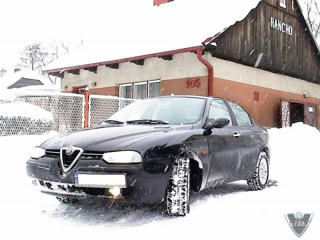
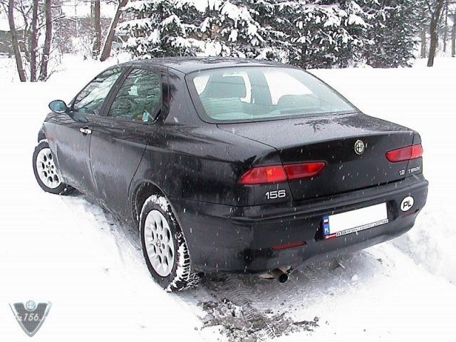
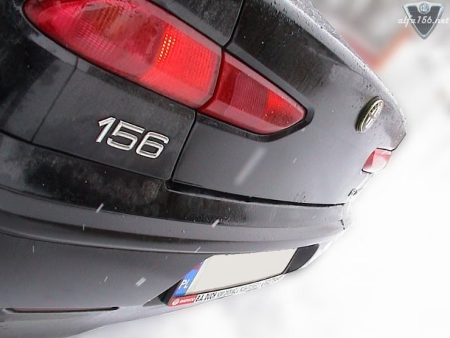
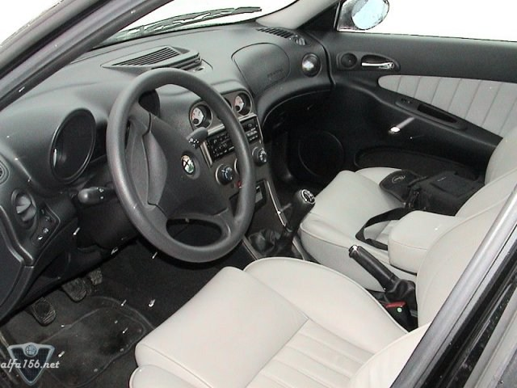

This is a 1.8TS with Momo leather seats. Owner is Rafal, located in Poland.
You can also see his previous Alfa Romeo 156 1.6TS here!
Rafal also have a few movie clips available:
15 MB, divx 5.02, sliding alfa
11 MB, divx 5.01, alfas video
3,5 MB, divx 5.01, my old alfa 1.6 on the test drive
35 MB, divx 5.01, local alfa club meeting in Cracow, Poland with driving on the old airport
Note If you only get a blank screen trying to view these videos, then you should
download the free www.divx.com codec.



![[Prev]](bw_prev.gif)
![[Index]](bw_index.gif)
![[Next]](bw_next.gif)